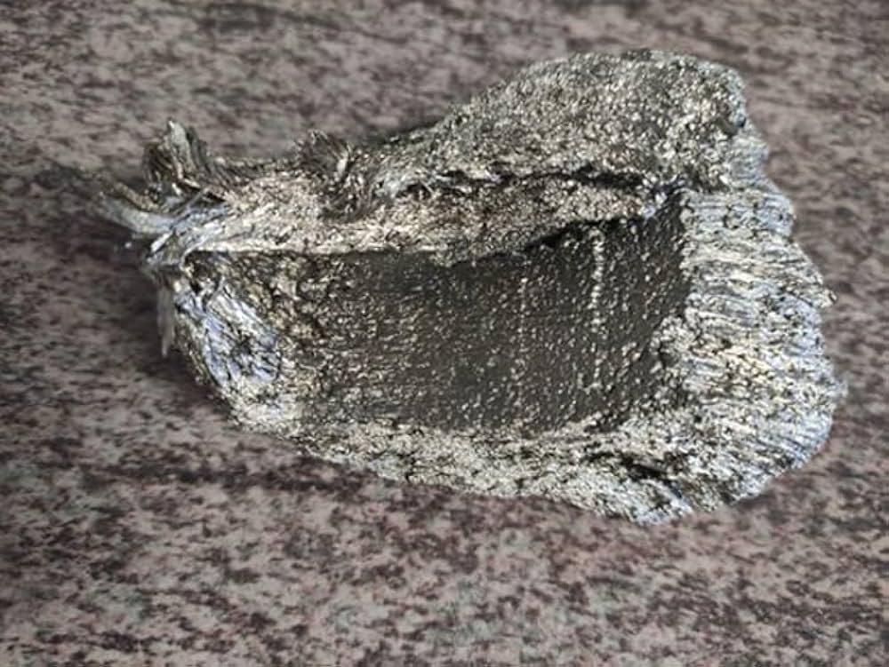

| Property |
Value |
| Atomic Mass |
150.36 u |
| Atomic Number |
62 |
| Main Isotopes |
Sm-144, Sm-147, Sm-152, Sm-154 |
| Mass Number (Sm-144) |
144 |
| Melting Temperature |
1,072 °C |
| Boiling Temperature |
1,800 °C |
| Density |
7.52 g/cm³ |
| Electronegativity |
1.17 (Pauling Scale) |
| Year of Discovery |
1853 |
| Abundance in Earth's Crust |
0.0006% |
| Characteristics |
Rare earth metal used mainly in magnetic alloys, nuclear applications, and geological dating. |
| Technological Applications |
- Permanent magnets (SmCo).
- Nuclear reactors.
- Catalysts, optical fiber, and lasers.
|
| Major Deposits Location |
Primary sources in China, USA, Australia, Russia, and India. |
| Health Effects |
Exposure to radioactive isotopes such as Sm-147 can cause skin, eye, and lung irritations. |
| Environmental Effects |
Extraction and processing may lead to radioactive contamination and pollution of soil and water. |
